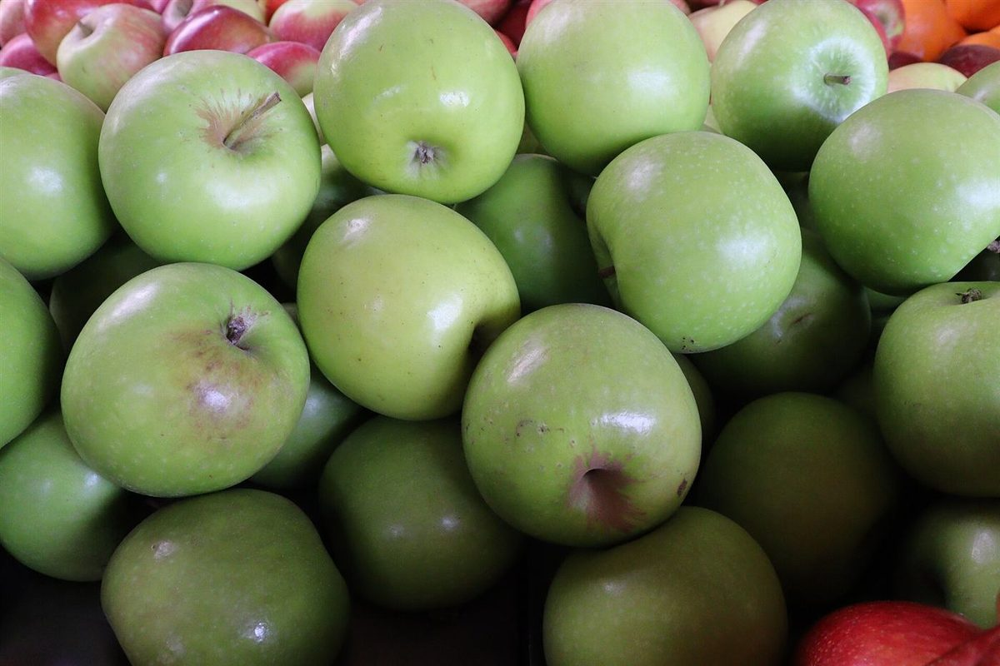
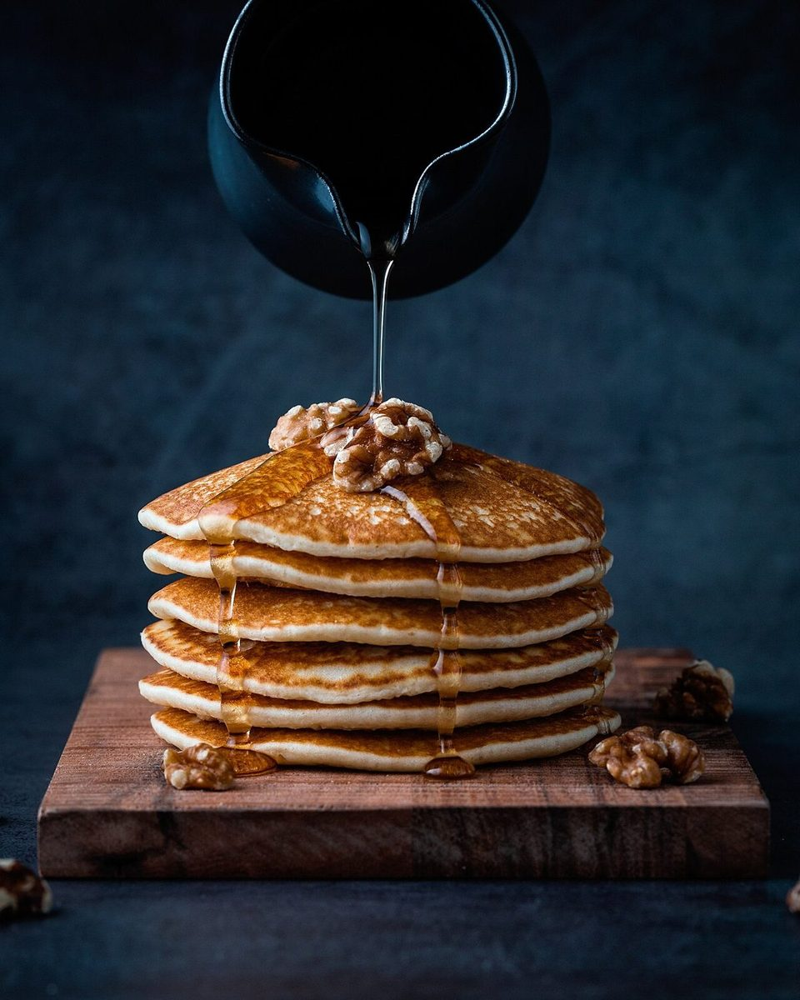
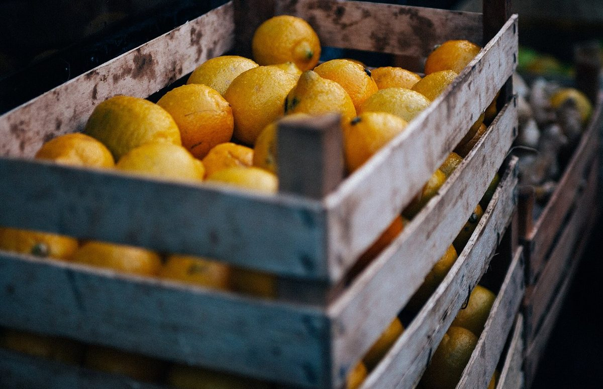
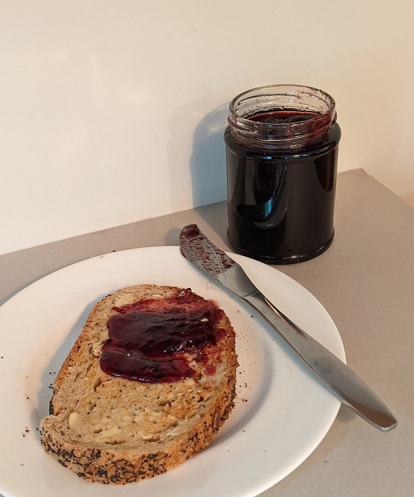
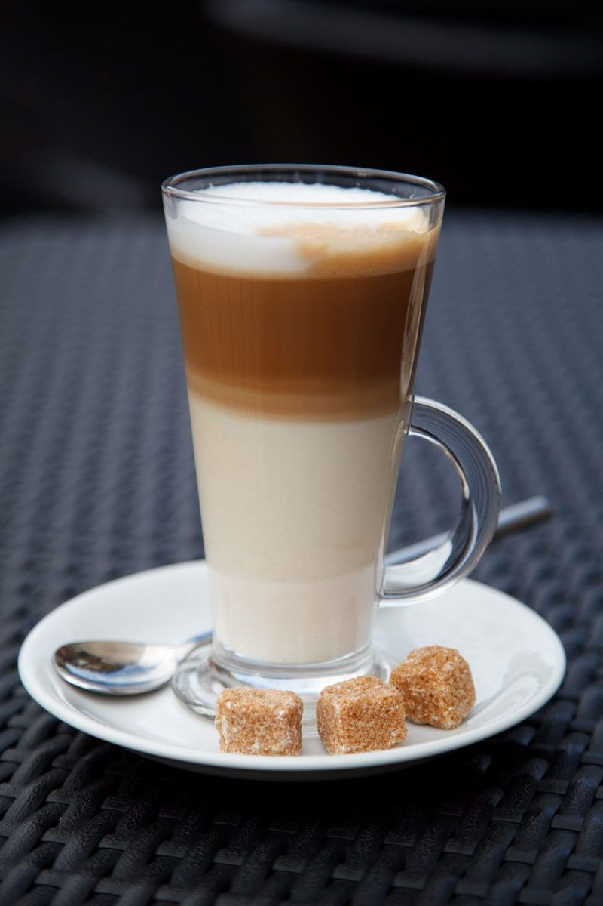

写真はパンやコーヒー豆、果物などのイメージです。お店のものではなく、お店で提供している商品を示すものでもありません。
制作側の連想
タイヤを、配置図にしてみる
このサイトは、タイヤを横から見たつもりで作りました。六つの部位に番号をふり、図と並べています。これは制作側の連想で、お店の理念・由来とは無関係です。実際の製品の仕様を示すものでもありません。
凡例
六つの部位
- 1トレッド路面に当たるゴムの面。みぞが刻まれ、ブロック状に並ぶ。
- 2ショルダートレッドの端にあたる、側面へ折れ曲がる肩の部分。
- 3サイドウォールタイヤの側面。表面に文字や模様が入ることが多い。
- 4ビードタイヤの内側の縁取り。ホイールの縁にはまる部分。
- 5リムホイールの外周の縁。ここにビードがはまる。
- 6バルブ空気を出し入れするための小さな口。
ギャラリー(イメージ)
写真のイメージ




写真はイメージです。お店の商品や店内を示すものではありません。
ご案内
お店のこと(確認できたものだけ)
| 所在地 | 〒893-0037 鹿児島県鹿屋市田崎町2426-2 |
|---|---|
| 電話 | 準備中 |
| 営業時間 | 準備中 |
| 定休日 | 準備中 |
| メニュー・価格 | 準備中 |
| ご予約 | 準備中 |
| 駐車場 | 準備中 |
| SNS | Instagram @huru1241 |